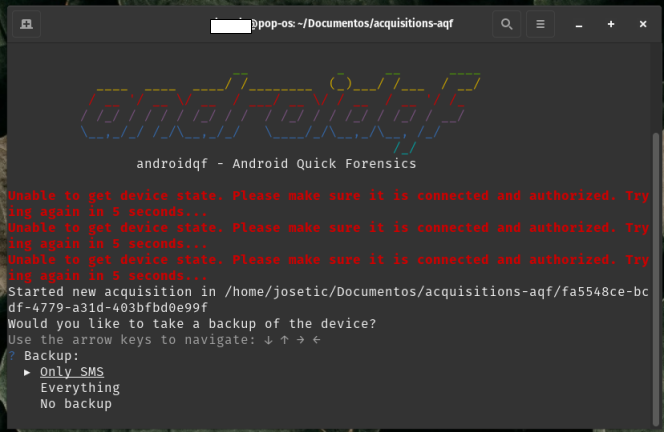

How to perform an extraction with AndroidQF?
This resource falls within the category how-to guides, provides instructions on how to perform a forensic extraction using the AndroidQF tool.
What is AndroidQF?
AndroidQF is an open-source software tool useful to extract key information and artifacts from an Android device. It is currently maintained by Amnesty International’s Security Lab.
AndroidQF was designed to support investigations managed by technical labs and practitioners in support of journalists, activists and human rights defenders who might face surveillance and spyware threats.
AndroidQF acts as a forensic wrapper around ADB, automating common commands through modules that enable quick, safe, and local extractions from any operating system (Linux, Windows, or macOS), without relying on cloud services or complex installations.
Its utility for civil society contexts lies in its portability, ease of use, and local execution.
This guide is complemented by other materials, such as the dictionary of files generated by AndroidQF or the explainer on log-based forensics for Android devices.
What do I need to perform an extraction with AndroidQF?
To perform a forensic extraction with AndroidQF, you will need:
- The Android device to be analyzed: Enable Developer Mode and USB Debugging. If needed, consult our guides on enabling Developer Options or on how to enable ADB.
- A computer (Windows, Linux, or macOS): This will be used for the extraction. You must know the chip architecture of your system.
- A data transfer cable (phone-to-computer).
Steps to perform a forensic extraction with AndroidQF
Below are the detailed steps to perform the forensic extraction:
Download the AndroidQF binary
-
Download the most recent version of the binary corresponding to the architecture of your computer. Binaries are available from the releases page of the repository:https://github.com/mvt-project/androidqf/releases/
How to identify your architecture??
If you’re unsure of your system’s architecture, consult this resource to determine which chip is integrated into your device.
-
Create a new folder to store the device extraction and move the downloaded binary into this folder.
Assign execution permissions to the binary (Linux and macOS only)
-
f you are using Linux or macOS, you must assign execution permissions to the binary before running it. Open a terminal, navigate to the folder containing the binary, and execute:
Complete the file name
The commands below are missing the exact version. Make sure you use the full name of the binary when completing the commands. It will look something like this:
chmod +x ./androidqf_v1.7.1_linux_amd64Linux:
chmod +x ./androidqf_MacOS:
chmod +x ./androidqf_
Connect the phone
-
Connect the unlocked Android device to the computer using a USB data cable.
Not all USB cables are equal
Some cables lack the necessary pin and connections for data transfer. While this is good from a privacy standpoint, it will not work for an extraction. Ensure you are using a cable that supports data transfer (these are often the original cables included with devices or fast-charging cables).
-
When the phone is connected, a pop-up will appear requesting permission to allow USB debugging. Select Allow, as shown in Image 1.
No pop-up o prompt appears
If no prompt appears asking for permissions, try the following:
- Verify that USB Debugging is enabled.
- Check USB configuration settings and confirm that File Transfer mode is selected.
- Try with a different cable. Ensure the cable supports data transfer.

Image 1. Screen capture of an Android Samsung device asking for data access permission
Run AndroidQF
At this point, AndroidQF can be executed.
Execute the following command. Make sure you add the full binary name i.e. androidq_.
./androidqf-linux-v?
./androidqf-macos-v?

Image 2. Screen capture of a Linux terminal executing the androidqf binary to start an extraction.
- Go to the folder where you downloaded the binary, as instructed on step 1. Double click the file and a security alert window should pop-up. Click on more information.

Imagen 3. Screen capture of a windows computer in Spanish showing a security message and the "more information" option.
- Select “Run Anyway”

Imagen 4. Screen capture of a windows computer in Spanish showing the "Windows protected your PC message".
Confirm and configure the extraction
The following steps will be applied equally on Linux, Windows, or macOS. Once executed, AndroidQF will:
- Automatically detect the connected device. This should happen as long as USB debugging has been enabled.
-
Create a folder with a random UUID to store the files pertaining to the extraction.
What is the UUID?
A UUID is a randomly generated number expressed as 32 hexadecimal digits separated into groups of 8-4-4-4-12 digits, for example:
0caba18f-20a7-48d0-b9ba-724fdaa3ff85 -
AndroidQF will then ask what type of backup to perform::
- Only SMS: Backup limited to SMS and MMS messages.
- Everything: Full device backup using
adb backup - No Backup: Skips backup entirely and extracts only other artifacts via ADB.
Alternative
In this example we use the Only-SMS option to limit the extraction to only SMS messages, reducing the exposure of additional personal data. Alternatively you can select the everything option for a full device backup, that might include additional files from applications that have subscribed to the system backup function. Be aware that the
adb backupfunction is being deprecated, and is not a reliable way to make a full device backup.
Image 6. Screenshot of a Linux system terminal, showing the AndroidQF backup menu with the "Only SMS" option selected.
-
Once you selected the type of backup, AndroidQF will request an encryption password for the backup generated through ADB. In this example, we are using the password sd (initials of seguridad digital).This process is depicted in image 7.
Alternative
If you choose to use more complex randomly generated passwords, make sure to **store them in a password manager ** with proper backups. Alternatively, and particularly if you have adequate infrastructure and solid policies for the protection of evidence, a simple standard password should be enough.

Image 7. Screenshot of a Samsung mobile device asking for the backup password ("sd" in this example)
-
Select: “Backup now”.

Image 8. Screenshot of a Samsung mobile on the backup and restore screen
Common & expected error messages
You can expect some errors related to "failed to get file paths for package". This errors do not affect the extraction, and are NOT an indication of a major issue.

Image 9. Screenshot showing expected errors related to file paths.
-
After identifying installed packages, AndroidQF will ask which application APKs to download:
- All: Downloads all APKs, including system apps.
- Only non-system packages: Download only user-installed apps.
- Do not download any: Skip APK downloads entirely.
What should I select?
The best approach will depend on the context of the investigation. If you suspect of an advanced attack that might have impacted system apps, then use the "All" option. On the other hand, if you are mostly interested in the user downloaded apps, you can select "only non-system packages". Omitting system apps will make the extraction smaller in size and a little faster.

Image 10. Screenshot of a Linux system showing the APK selection options, and highlighting the only non-system option.
-
Next, AndroidQF will ask whether to exclude APKs signed by trusted developers (e.g., Google or the device manufacturer) to reduce the size of the extraction.
- Answer yes, so you can focus the analysis on potentially suspicious apps, while saving space.
Sophisticated attacks
If you believe you are dealing with an advanced threat, sophisticated enough to meddle with trusted applications certificates, then **select the option "No".

Imagen 11. Screenshot of the process in a Linux terminal, using the option to omit applications signed by trusted certificates.
-
Wait until all modules of AndroidQF are executed.
How long does it take?
The process may take several minutes to a an hour depending on the phone model and data size. Progress is displayed line by line in the terminal. At the end, press Enter to finish.

Image 12. Screenshot of a Linux terminal displaying the messages and progress displayed on a successful AndroidQF extraction.
Verify the extraction
Once complete, it is important to verify that the acquisition was completed successfully:
- Open the file
command.logand search for warning or error messages. If you find matches, verify the errors and warning messages and ssess whether they are critical failures.
Use the following command inside the acquisition folder:
grep -i "WARNING\|ERROR" command.log

Imagen 12. Grep command on a Linux system looking for errors on the extraction.
Open the command.log file using Notepad. Open the search menu from the navigation bar or using the keyboard shortcut ctrl+b y search for WARNING or ERROR.

Imagen 14. Screen-capture of Windows notepad searching for errors in the command.log file
-
Check that the file
acquisition.jsonexists and contains expected data. For additional information, consult the AndroidQF extracted files dictionary.
Imagen 15. Screenshot of a text editor displaying the acquisition.json file from an AndoridQF extraction.
-
Ensure that the following files and folders were generated in the output directory:
├── apks/ ├── logs/ ├── tmp/ ├── .json ├── backup.ab ├── bugreport.zip ├── command.log ├── dumpsys.txt ├── env.txt ├── files.json ├── getprop.txt ├── hashes.csv ├── logcat.txt ├── packages.json ├── processes.txt ├── root_binaries.json ├── selinux.txt ├── services.txt ├── settings_global.txt ├── settings_secure.txt └── settings_system.txt
Imagen 16. Screenshot of a Linux system showing the files generated by AndroidQF on a successful extraction
Conclusion
AndroidQF enables forensic acquisition and extraction from Android devices. It is widely used by civil society labs due to its practicality, simplicity, and portability. This guide presented the step-by-step process to conduct an extraction using Windows, Linux or MacOS systems.
Forensic acquisition is one of the first steps in an investigation and is essential for starting triage. The extracted data can then be analyzed manually (see the file dictionary or with tools such as MVT.
If you would like to contribute to this or other resoruces, please check our community section to learn more about how to collaborate and improve this resource.
Comments
Do you have any comment or suggestion about this resource? You can use the comment function provided below to leave your ideas, corrections or thoughts. Please make sure to follow our code of conduct when leaving your comment. If you prefer, you can also participate in the discussion directly in the github repository.